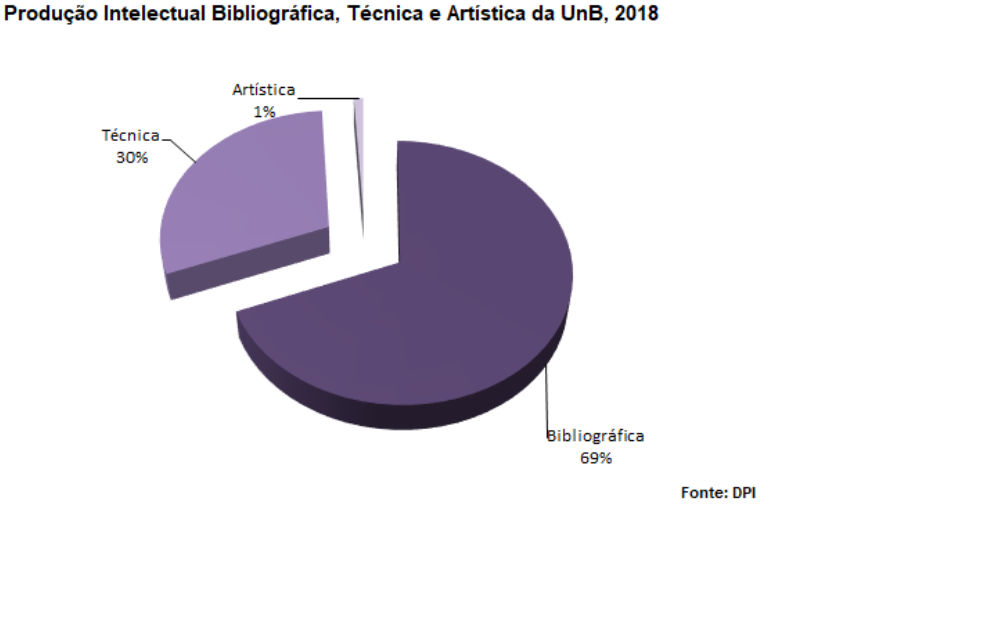

Capítulo 7 Produção Intelectual e Pesquisa
Faça o download de todas as tabelas desta seção: Download producao_intelectual.xlsx
7.1 Produção intelectual bibliográfica, 2019
| Produção Bibliográfica | 2019 |
|---|---|
| Artigo em jornal ou em revista | 550 |
| Artigos em periódicos | 6.288 |
| Livros | 2.345 |
| Trabalhos em anais | 4.163 |
| Traduções | 58 |
| Total | 13.404 |
| Fonte: Extraído do Sistema Coleta da CAPES | |
7.2 Gráfico de Produção intelectual bibliográfica, técnica e artística da UnB, 2019

Download graf1.png
Figura 7.1: Produção intelectual bibliográfica, técnica e artística da UnB, 2019
7.3 Produção intelectual técnica, 2019
| Produção Técnica | 2019 |
|---|---|
| Curso de curta duração | 496 |
| Desenvolvimento de aplicativos | 91 |
| Desenvolvimento de material didático e instrucional | 133 |
| Desenvolvimento de produto | 36 |
| Editora | 421 |
| Organização de eventos | 1.015 |
| Patente | 67 |
| Programa de rádio ou TV | 936 |
| Serviços Técnicos | 2.623 |
| Total | 5.818 |
| Fonte: Extraído do Sistema Coleta da CAPES | |
7.4 Produção intelectual artística, 2019
| Produção Artística | 2019 |
|---|---|
| Artes cênicas | 91 |
| Música | 75 |
| Outra produção cultural | 24 |
| Total | 190 |
| Fonte: Extraído do Sistema Coleta da CAPES | |
7.5 Número de bolsas e investimento em bolsas no país, por modalidade, 2019
| Modalidade | Número de Bolsas | Valor das Bolsas* |
|---|---|---|
| Apoio a Participação/Realização de Eventos | 2 | 8.500 |
| Apoio a Projetos de Pesquisas | 5 | 1.500 |
| Bolsas de Apoio Técnico | 11 | 3.700 |
| Bolsas de Desenvolvimento Tecnológico e Industrial | 1 | 4.000 |
| Bolsas de Desenvolvimento Tecnológico e Industrial | 46 | 15.100 |
| Bolsas de Doutorado | 109 | 31.500 |
| Bolsas de Extensão em Pesquisa | 47 | 9.000 |
| Bolsas de Iniciação Científica | 476 | 4.800 |
| Bolsas de Iniciação Científica Júnior | 62 | 1.200 |
| Bolsas de Mestrado | 89 | 21.000 |
| Bolsas de Pós-doutorado | 57 | 10.200 |
| Bolsas de Produtividade em Pesquisa e Tecnologia | 109 | 37.600 |
| Bolsas de Produtividade em Pesquisa e Tecnologia | 64 | 31.500 |
| Bolsas de Produtividade em Pesquisa e Tecnologia | 30 | 16.100 |
| Bolsas de Produtividade em Pesquisa e Tecnologia | 25 | 10.900 |
| Bolsas de Produtividade em Pesquisa e Tecnologia | 15 | 2.200 |
| Indefinido | 4 | 14.300 |
| Total Geral | 1.152 | 223.100 |
| Fonte: DPG/DIRIC e Programas de Pós-Graduação, julho-2020 | ||
| 1 Valor Mensal* |
7.6 Número de bolsas e investimento em bolsas no exterior, por modalidade – UnB, 2019
| Modalidade | Número de Bolsas | Investimento (reais) | Investimento (dólares) |
|---|---|---|---|
| Doutorado Sanduíche no Exterior | 6 | 39.130 | 6.500 |
| Pós-Doutorado no Exterior | 3 | 37.926 | 6.300 |
| Total Geral | 9 | 77.056 | 12.800 |
| Fonte: Programas de Pós-Graduação, julho-2020. | |||
| 1 Valor Mensal* | |||
| 2 Cotação do dólar em 08/07/2020 = R$ 6,02 |
7.7 CNPq: Distribuição dos grupos de pesquisa por área de conhecimento cadastrados no diretório, 2019
| Área | Grupos |
|---|---|
| Ciências Humanas | 2 |
| Ciências Sociais Aplicadas | 2 |
| Linguística, Letras e Artes | 1 |
| Ciências Agrárias | 1 |
| Total | 6 |
| Fonte: DPG/ CNPq/ Plataforma Lattes (www.lattes.cnpq.br/web/dgp), julho-2020 | |
7.8 Grupos de Pesquisa ativos da UnB, 2019
| Área | Grupos |
|---|---|
| Ciências Humanas | 141 |
| Ciências Sociais Aplicadas | 158 |
| Ciências da Saúde | 89 |
| Linguística, Letras e Artes | 87 |
| Ciências Biológicas | 27 |
| Engenharia e computação | 50 |
| Ciências Exatas e da Terra | 57 |
| Ciências Agrárias | 13 |
| Multidisplinar | 3 |
| Total | 625 |
| Fonte: DPI, julho-2020 | |
7.9 Programa institucional de bolsas de iniciação científica – PIBIC, 2019
| Descrição | Qtd. |
|---|---|
| Inscrições | 3.047 |
| Bolsas CNPq | 476 |
| Bolsas UnB | 316 |
| Bolsas FAPDF | 352 |
| Total de Bolsas | 1.144 |
| Projetos Aprovados | 2.454 |
| Trabalhos Apresentados nas Reuniões da SBPC | 11 |
| Trabalhos Apresentados nos Congressos do PIBIC | 2.449 |
| Fonte: DPG/DIRIC, Julho-2020 | |
7.10 Evolução do PIBIC na UnB, por inscrições, bolsas do CNPq e da UnB, 2015 a 2019
| Ano | Inscrições | Bolsas CNPq | Bolsas UnB | Bolsas FAPDF | Total de Bolsas |
|---|---|---|---|---|---|
| 2015 | 2.255 | 479 | 447 | 0 | 926* |
| 2016 | 2.402 | 467 | 412 | 0 | 879 |
| 2017 | 2.801 | 467 | 412 | 0 | 879 |
| 2018 | 2.880 | 476** | 250 | 0 | 726 |
| 2019 | 3.047 | 476 | 316 | 352*** | 792 |
| Fonte: DPG/DIRIC, julho-2020 | |||||
| 1 No último mês de 2015 houve a implementação das bolsas da FAP-DF* | |||||
| 2 Revisão da apuração do dado, julho-2020** | |||||
| 3 Em 2019, a FAPDF concedeu 352 bolsas de IC à UnB *** |
7.11 Evolução do número de alunos voluntários do PIBIC, 2015 a 2019
| Ano | Voluntários |
|---|---|
| 2015 | 723 |
| 2016 | 902 |
| 2017 | 1.128 |
| 2018 | 2.082 |
| 2019 | 1.310 |
| Fonte: DPG/DIRIC, julho-2020 | |
7.12 Evolução do número de projetos aprovados, orientadores e bolsistas do PIBIC, 2015 a 2019
| Ano | Projetos | Orientadores | Bolsistas |
|---|---|---|---|
| 2015 | 1.283 | 950 | 1990 |
| 2016 | 1.314 | 705 | 1179* |
| 2017 | 1.445 | 945 | 1179** |
| 2018 | 2.808 | 2.450 | 726 |
| 2019 | 2.449 | 897 | 1144 |
| Fonte: DPG/DIRIC | |||
| 1 Revisão da apuração do dado, julho-2020* | |||
| 2 revisão da apuração do dado, julho-2020** |
7.13 Evolução do número de trabalhos apresentados pelos bolsistas do PIBIC nas reuniões da SBPC, 2015 a 2019
| Ano | Trabalhos |
|---|---|
| 2015 | 24 |
| 2016 | 70 |
| 2017 | 28 |
| 2018 | 11 |
| 2019 | 11 |
| Fonte: DPG/DIRIC, julho-2020 | |
7.14 Evolução do número de trabalhos apresentados nos congressos do PIBIC – UnB, 2015 a 2019
| Ano | Trabalhos |
|---|---|
| 2015 | 24 |
| 2016 | 70 |
| 2017 | 28 |
| 2018 | 11 |
| 2019 | 11 |
| Fonte: DPG/DIRIC, julho-2020 | |